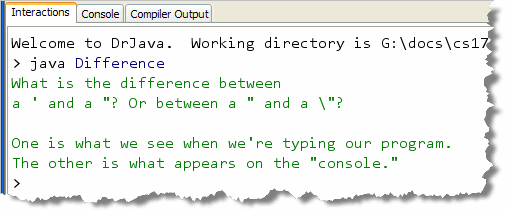
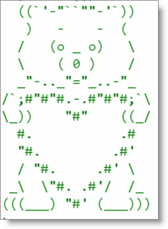
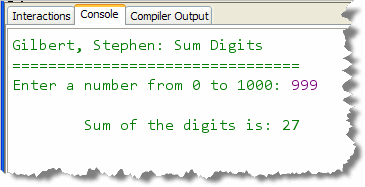
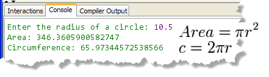

This week, you'll work on IPO,
or Input, Processing, and Output programs.
You'll start with simple programs and then move on to
more complex processing using functions from the
Math class. Your input and ouput will also
move from the simple to the complex, parsing
String input and formatting the ouput.
Here's the list of things you should do this week.
- Set Up Your Tools: If you're going to work at home, then follow the instructions on the class home page to install Java along with the DrJava Integrated Development Environment. You must use the OCDJ-Summer12.jar version of DrJava.
- MyFirstConsoleProgram: HERE is a video that shows you how to complete a basic console program. You did this in class this week.
-
TicTacToeBoardPrinter: This is a "practice"
exercise to get you ready for the exams. Try this after you've
completed the online lessons to see how much you've absorbed. To
do this exercise, start DrJava (fresh, with no other apps open)
and create a new console-mode application in the week01 folder.
- Name the program TicTacToeBoardPrinter.
- The output of the program should look like this:
+---+---+---+ | | | | +---+---+---+ | | | | +---+---+---+ | | | | +---+---+---+
Don't put any spaces around your tic-tac-toe board. You should have exactly seven lines of output. - Once you have created the program, compile it and run CheckResults to see your score. If you didn't do as well as you thought, check the Solution for some tips that may help you. HERE is a solution to this exercise.
-
StaircasePrinter: This is another "practice"
exercise to get you ready for the exams.
Create a new console-mode application in the week01 folder.
- Name the program StaircasePrinter.
- The output of the program should look like this:
+---+ | | +---+---+ | | | +---+---+---+ | | | | +---+---+---+---+ | | | | | +---+---+---+---+Don't put any extra spaces around your staircase. You should have exactly nine lines of output. - Once you have created the program, compile it and run CheckResults to see your score.
-
Output: Difference: This is a "practice"
exercise to get you ready for the exams. Try this after you've
completed Chapters 1 and 2 to see how much you've absorbed. To
do this exercise, start DrJava (fresh, with no other apps open)
and create a new "regular" console-mode application in the Chapter02 folder.
Name the program Difference. The output of the program should look like this:

Notice that the purpose of this exercise is to make sure you know how to use escape sequences in your output. Notice also that there are five lines of output and that line 3 is empty.Once you have created the program, compile it and run Check to see your score. If you didn't do as well as you thought, check the Solution for some tips that may help you. HERE is a solution to this homework exercise.
-
 Output 2: Spikey: Here is another "practice"
exercise to try for output and escape sequences.
Write a "regular" console-mode program named Spikey that
prints the output shown to the right. (Click image to enlarge.)
Output 2: Spikey: Here is another "practice"
exercise to try for output and escape sequences.
Write a "regular" console-mode program named Spikey that
prints the output shown to the right. (Click image to enlarge.)
As with the previous exercise, the purpose is to make sure you know how to use escape sequences in your output. Notice also that there are six lines of output with Spikey. There are no trailing spaces in the output.
Once you have created the program, compile it and run Check to see your score.
-

Output 3: HuggyBear: Here is a final "practice" exercise to try for output and escape sequences. Write a program named HuggyBear that prints the output shown to the right.As with the previous exercises, the purpose is to make sure you know how to use escape sequences in your output. Notice also that there are twelve lines of output with HuggyBear. There are no trailing spaces in the output.
Once you have created the program, compile it and run CheckResults to see your score. If you didn't do as well as you thought, check the Solution for some tips that may help you. HERE is a solution to this homework exercise.
The first proficiency quiz will be similar to this problem. You will have one-half hour to complete a similar program.
-
IPO Practice 1—FeetToMeters:
Write a program that reads a number in feet, (input by the user),
and then converts it to meters and displays the result.
Use a named constant to represent
METERS_PER_FOOT. The value you should use for your constant is:0.305. (This will ensure that everyone's calcuations come out the same.) Here's what the FeetToMeters program should look like:
 Follow the same steps and basic structure as you did for
the problems in class this week.
Follow the same steps and basic structure as you did for
the problems in class this week.
Once you have created the program, compile it and then Check your results. Keep trying until you get a perfect score. (You'll want to check your style as well.) HERE is a solution to this homework exercise.
-
IPO Practice 2—TipCalc:
Write a console IPO program named TipCalc that reads a
subtotal and gratuity rate and then computes the gratuity
and total bill. Here's what a sample interaction should look like along
with some notes about the program's requirements:
 Follow the same steps as the problems in lecture this week.
Follow the same steps as the problems in lecture this week.
Once you have created the program, compile it and then Check your results. Keep trying until you get a perfect score. You'll want to check your style as well.
-

IPO Practice 3—SumDigits: Write a console program named SumDigits that reads a single integer from the user. (Do not read the input as aString.) You can assume that the user will cooperate and only input values between 0 and 1,000. Your program should use the arithmetic operators discussed in class to sum all of the individual digits in the number. To the right is a sample interaction so you can see what the program should look like as it runs. (Click to enlarge).To calculate the digits you'll have to do several divisions and integer remainder (%) operations. Notice that for any integer,
n % 10returns the value of the right-most digit, andn / 10returns a new number with the right-most digit discarded.Follow the same steps as the example IPO problems in class. Once you have created the program, compile it and then Check your results. Keep trying until you get a perfect score. HERE is a solution to this homework exercise.
-
IPO Practice 4—CircleStats:
Write a console program named CircleStats that reads a
radius value for a circle and the computes and prints the
area and the circumference. Here's what a sample interaction
should look like along with the formulas you'll need:

Remember to useMath.PIfor the value of pi. You can square the radius using multiplication or theMath.pow()function.Follow the same steps as the example IPO problems from lecture. Once you have created the program, compile it and then Check your results. Keep trying until you get a perfect score. HERE is a solution to this homework exercise.
The second proficiency quiz will be similar to this problem. You will have one-half hour to complete a similar program.